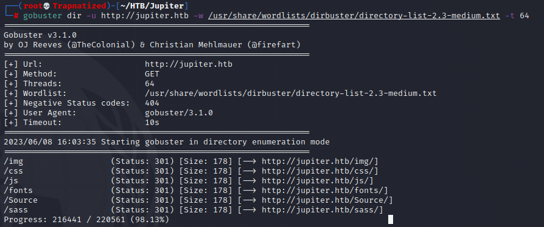

Ok let's start off with a port scan as usual

Port 80 is open but it looks like we need to add `jupiter.htb` to our `/etc/hosts` file. You can use any text editor you want to edit `/etc/hosts` (ex: nano, vim, gedit, mousepad). I will just use echo and append to the end of `/etc/hosts`.

Now we can view the website on port 80.

Scanning for directories using gobuster we dont really see anything useful.

Let's try scanning for subdomains instead.

We find a subdomain called `kiosk.jupiter.htb`. Let's add this to our `/etc/hosts/` file also. I will be using sed to search for the word `jupiter.htb` and replace it with `jupiter.htb kiosk.jupiter.htb` inside `/etc/hosts`

Now we can view the new subdomain.

If we utilize the firefox extension `Wappalyzer` we can see `Grafana` is running along with some other information about the technologies being used in this site.

At first i tried to use this exploit `https://www.exploit-db.com/exploits/50581` to read an arbitrary file. I tried to read `/etc/passwd` and also `/etc/grafana/grafana.ini` but this exploit did not work. On to the next...
According to this article `https://community.grafana.com/t/sql-injection-in-api-tsdb-query-in-grafana/29713` Grafana is vulnerable to SQLi by using `SELECT` in the rawSql parameter. Let's fire up burp suite and find out if any requests contain `rawSql:`
First turn on firefox extension `FoxyProxy` and turn `intercept off` in burp suite.


Now let's refresh the page and head to the `HTTP history` tab to check out the recent requests. We see a bunch of requests come in when we to go the homepage of this site but the request we are interested in is the POST request to `/api/ds/query`.

We see this request does have `rawSql` parameter so we can utilize `sqlmap` to test for SQL injection.
If we right click on the request and `copy to file` we can save this request and name it raw.req.
Now let's check `sqlmap`


So `rawSql` is injectable... Lets get a shell using `sqlmap`.


And we are postgres, but this shell isnt to stable. Let's send ourselves a reverse shell.
Start up a netcat listner


Time to escalate our privilges